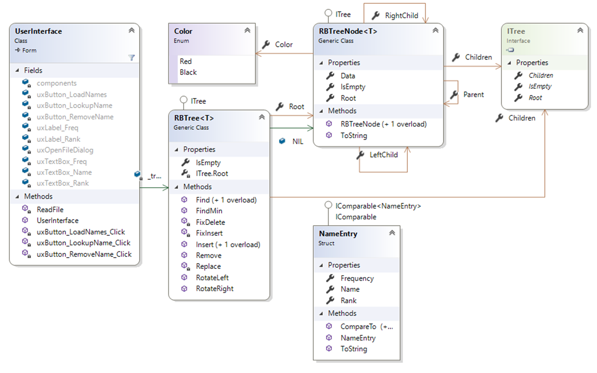

User Requirements
For this assignment, you will be implementing a Red-Black tree. This tree is used for many situations, including functionality of the Linux operating system. A red black tree is simply a binary search tree where each node has been colored either red or black. With this restriction, no path to a leaf node is more than twice the height of another. As such, the height of a red-black tree is log n where n is the number of nodes. Therefore, operations on this tree will run in the worst case, O(log n). To maintain this scenario, a red-black tree must follow a set of rules/properties:
- Every node is colored either red or black
- The root node is black
- Every node that does not contain data (these are represented as NIL instead of null) is colored black
- If a node is red, then both of its children must also be black
- For each node, all paths from itself to descendant leaf nodes must contain the same number of black nodes (this can also be referred to as the black-height)
Operations on a red-black tree are quite like the ones done on a normal binary tree. They differ in cases where the properties above must be maintained. The details of these operations are detailed below in the code requirements; however, I recommend looking at the illustrations in this resource. There is one small typo I have noticed in this resource: on page 1, where the tree is being corrected, for case 1, the second bullet should read “Color a’s grandparent (c) to red”.
Starting the Assignment
Create a GitHub repository using this URL. This repository will contain a Visual Studio solution and a folder Data containing different word-rank-frequency files that we have used in lab so far. Finally, it contains a sample executable contained in a zip folder called hw4 exe.zip.
User Interface

The user interface mimics the NameLookup project from class. There are three Buttons, each with a click event handler. There are also three text boxes. The rank and frequency text boxes are read only. To make the UI more readable, increase the font size to 12 or 14pt font. The form itself should not be able to be resized.
Software Architecture

You do not need to use the same names as shown in the class diagram, as long as you follow the naming conventions for CIS 300. You may add any private methods that you feel improve the code.
Coding Requirements
The NameEntry class is given. Note that to implement the ITree class as described below, you must add using KansasStateUniversity.TreeViewer2; to the corresponding files.
The RBTreeNode Class
This class represents a red black tree node. This is very much like a normal binary tree node, with the addition of a Color property. This class is a generic class (of type T) that implements the ITree interface, and where T implements IComparable. In addition to this class, the RBTreeNode.cs file should also contain a public enumerator called Color that contains Red and Black.
Properties
public Color Color- A property to store this nodes color. This type is of the enumerator described above.
public RBTreeNode<T> LeftChild- Represents the left child node of this node.
public RBTreeNode<T> RightChild- Represents the right child node of this node
public RBTreeNode<T> Parent- Represents this node's parent.
public T Data- The data/key stored at this node.
public object Root- This is a property that is used by the ITree interface. It should only have a getter that returns this.
public ITree[] Children- This is a property that is used by the ITree interface. It should only have a getter that returns an array of
RBTreeNode<T>'s that has the LeftChild as the first element and RightChild as the second element.
- This is a property that is used by the ITree interface. It should only have a getter that returns an array of
public bool IsEmpty- This is a property that is used by the ITree interface. It should only have a getter that returns whether or not the Data property equals the default value of T. Be sure to use the Equals function of the Data property.
Methods
public RBTreeNode(T data, RBTreeNode<T> left, RBTreeNode<T> right)- Public constructor that sets the Data, LeftChild, and RightChild properties.
public RBTreeNode()- Public constructor that sets the Color property to Black. Note that this is from the enumerator described above...NOT the C# Color class.
public override string ToString()- Converts this node to a string and returns the result. The string should be in the format Color: Data
The RBTree Class
This class represents a whole red black tree, storing its root. This is a generic class (of type T) that implements the ITree interface and where T implements the IComparableand the IComparable<T>interfaces.
Fields
public static readonly RBTreeNode<T> NIL- This should be set to a new RBTreeNode using the default constructor. This is a special node in the red black tree. While we will still have some null nodes, we will use NIL to represent the children of all leaves of the tree.
Properties
public RBTreeNode<T> Root- This is the Root property used to store the root node of the tree. It has a public getter and a private setter.
object ITree.Root- This is a property that is used by the ITree interface. It should only have a getter that returns this.
public ITree[] Children- This is a property that is used by the ITree interface. It should only have a getter that returns the root node's Children.
public bool IsEmpty- This is a property that is used by the ITree interface. It should only have a getter that returns whether or not the root node is null.
Methods
Note that the methods described below are iterative unless otherwise noted.
public RBTreeNode<T> FindMin(RBTreeNode<T> node)- This is a simple function that finds the smallest RBTreeNode given the red black tree node.
private bool Find(T search, out RBTreeNode<T> result)- This function looks to find the given search data. The function should return true if found, and false if not. If the item is not found, the out parameter should be set to null. Be aware that you will need to use the CompareTo function since you are dealing with Data which is a generic type. Also be aware that instead of looking for null as your stopping point, you should stop looking when you find NIL.
public bool Find(T search, out T result)- Simply uses the Find function above to find the given data in the red black tree. If the item is not found, the out parameter should be set to the default value of T.
public void RotateLeft(RBTreeNode<T> pivot)- This method will perform a single left rotation on the given red black tree node. This is identical to the rotation described for AVL Trees in Lab 20. The only exception is that rotations are made under different conditions in red black trees, although for this function, you only need to worry about performing the rotation. This rotation is slightly different compared to the one done in lab. Here, you will have to move the pointers for the LeftChild, RightChild, and Parent. Note that when looking for "null" values, you will use the traditional null when comparing to the Parent and NIL when comparing to the children.

public void RotateRight(RBTreeNode<T> pivot)- This is complete mirror to the RotateLeft function above. That means ever point where you change the LeftChild you will instead change the RightChild and vice versa.

public void Insert(T data)- This is the base case for inserting into the red black tree. If the Root is null, then this is the first node to be inserted into the tree. Create a new RBTreeNode with the given data and NIL for both children. Set the Color of the root to Black. Otherwise, if the root's data is the same as the given data, throw a new InvalidOperationException. If the data is valid for the root, call the Insert function below, passing a new RBTreeNode containing the data and NIL for both of its children.
private void Insert(RBTreeNode<T> newNode)- This method inserts the newNode in the red black tree. This works identical to the normal binary tree insertion with a few exceptions. You will need to move pointers instead of recreating the tree, and you will need to link the new node's Parent property. Keep in mind that when looking for a leaf node, you should be comparing against NIL. Once the node has been inserted, the tree may need to be repaired to maintain the properties of red black trees (described earlier in the assignment). To do so, call the FixInsert function passing in the newly inserted node.
private void FixInsert(RBTreeNode<T> node)This method fixes any case where the insertion of a node may have violated the properties of a valid red black tree. The algorithm for this fix should loop while the node is not the root and its parent's color is red.
If the node's parent is left child of my grandparent (the parent of the node's parent), we have three cases that could require adjusting the color of the nodes or rotating nodes in the tree.
Case 1: The node's uncle (the node's grandparent's left child) is not NIL and is red. For this case, we recolor the parent of node to be black, the uncle to be black, and the grandparent to be red. Set the node to be equal to its grandparent.
If the node's uncle is black, we have two cases to consider
- Case 2: The node is the right child of its parent. We need to correct this so that the node is the left child of its parent. Set the node to be equal to its parent, then rotate the node left.
- Case 3: The node is the left child of its parent. Color the parent black, the grandparent of the node red, and then rotate the grandparent of the node right. Note that this case is executed regardless if case 2 is true.
The else case (the node's parent is the right child of its grandparent) is an exact mirror (symmetric) to the three cases above.
private void Replace(RBTreeNode<T> a, RBTreeNode<T> b)- This method replaces node a with node b. If the parent of a is null, then b becomes the new root. Otherwise, if a is the left child of its parent, a's parent's left child becomes b. Otherwise, a's parent's right child becomes b. Finally, b's parent becomes a's parent.
public bool Remove(T item)This method will delete the node that matches the given item from the tree. This will operate very closely to a deletion operation in a regular binary tree, but with a few extra conditions. First you will need to get a hold of the node that matches the item by using the Find method. If nothing is found, return false. Otherwise, we need to keep track of a few bits of information. The node that was found will be referred to as r. We also need to keep track of the color of the node we are replacing, oldColor. This is initially the color of r. We will also keep track of the node that will be moving into place of the node we are removing (r)…this will be referred to as the fix node.
Case 1: If r’s left child is NIL, that means there is no left child and we can simply replace r. First set fix to r’s right child, then Replace r with r’s right child.
Case 2: This case is symmetric to case 1.
Case 3/4: In this instance, r has two children, so we cannot simply replace r right away. We must setup its successor.
- The successor is the minimum (FindMin) node of r’s right child. Once found, the oldColor should be set to the successor’s color and fix should be set to the successor’s right child.
- If the successor’s parent is r, then fix’s parent should be set to the successor. Otherwise, we need to Replace the successor with its own right child, set the successor’s right child to be r’s right child, and set the successor’s right child’s parent to the successor.
- Finally, once the successor has been correctly setup, we can Replace r with the successor. After it has been replaced, set the left child of the successor to be the left child of r and the parent of the successor’s left child to be the successor. Then set the color of the successor to be r’s color.
If the oldColor is black, that means the removal could have violated the properties of the red black tree, therefore we must call FixDelete with the fix node.
private void FixDelete(RBTreeNode<T> current)This method is used to correct any violations made after deleting a node from the tree using the Remove function. We have to continue to fix (loop while) the current node if it is not root and its color is black. There is no need to fix the current node if it was red since it would not cause any violations of the tree (based on how we do the removal and insertion of nodes).
Scenario: The current node is the left child of its parent. There are four different cases:
(if) Case 1: The sibling node of current is red. We need to recolor the sibling to black and change the current parent to red. Then, perform a left rotation on the parent of current.
(if) Case 2: Both of the children of current’s sibling are black. We simply recolor the sibling to be red and reset current to be its parent.
(else)
- Case 3: The right child of current’s sibling is black. Recolor the left child the sibling to black and the color of the sibling to red. Then perform a right rotation
- Case 4: Executes regardless if case 3 occurs. The sibling’s color now becomes the current’s parent’s color. The parent of current and the right child of the sibling are recolored to black. Then a left rotation is done on the parent of current. Once the rotation is done, current should be set to the root.
The second scenario is the exact mirror (symmetric) of the previous one.
At the end of the method, current needs to be recolored to black.
The UserInterface Class
This class represents the code behind the UI. The UI is responsible for loading names from files into a red black tree, displaying it, remove, and find functionality.
Fields
private RBTree<NameEntry> _tree- The red black tree that is currently loaded.
Methods
public UserInterface()- Default constructor.
private RBTree<NameEntry> ReadFile(string fn)- This method reads in a given file using a stream reader into a RBTree containing NameEntry objects as node data. The files should be formed as name, frequency, and rank, each on their own line, just as we have done in lab. Once done, return the newly created tree.
private void uxButton_LoadNames_Click(object sender, EventArgs e)- Using an OpenFileDialog, this click event handler reads a names file into the _tree field and creates shows the new tree (
new TreeForm(_tree, 10000).Show()). If an error is thrown, it should be shown in a message box.
- Using an OpenFileDialog, this click event handler reads a names file into the _tree field and creates shows the new tree (
private void uxButton_RemoveName_Click(object sender, EventArgs e)- This click event handler attempts to remove a name that was typed into the UI from the tree. You can use dummy information for the rank and frequency for creating a temporary NameEntry object to use as a parameter for passing to the Remove or Find methods in the tree class. If the name was removed, you should show that fact in a message box and display the new tree in a new TreeForm. Otherwise, show an appropriate message to the user indicating failure.
private void uxButton_LookupName_Click(object sender, EventArgs e)- This click event handler tries to find the name given by the UI in the tree. If it is found, the frequency and rank should be loaded into the corresponding text boxes. Otherwise, a message should be displayed and the text boxes for frequency and rank should be cleared.
Testing and Performance
There are a significant number of test cases that your code should pass. These are all included as part of the starting project. In addition to the tests, your code should be able to load any of the given data files into a valid red black tree. Likewise, the lookup and remove buttons should properly find and remove nodes from the tree. You can use the model solution executable to check your trees.
Submitting Your Assignment
Be sure to refresh your Team Explorer, commit all your changes, then push your commits to your GitHub repository. Then submit the entire URL of the commit that you want graded. There is no need to submit a comment, as you will not have a completion code.
Important: If the URL you submit does not contain the 40-hex-digit fingerprint of the commit you want graded, you will receive a 0, as this fingerprint is the only way we can verify that you completed your code prior to submitting your assignment. We will only grade the source code that is included in the commit that you submit.
A Note on the Executable Provided
The provided executable has been obfuscated to prevent decompiling to the original source code. Code decompiled from obfuscated code is difficult or impossible to understand. There exist deobfuscators that can make this decompiled code a bit more understandable, but it's still fairly obvious that it is obfuscated code. Any use of code decompiled and/or deobfuscated from the provided executable will be considered as cheating.